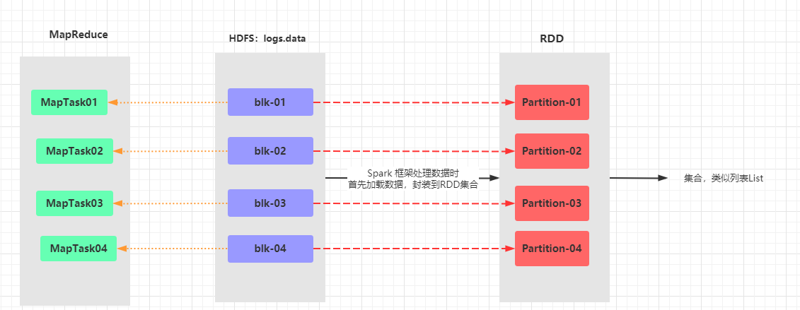
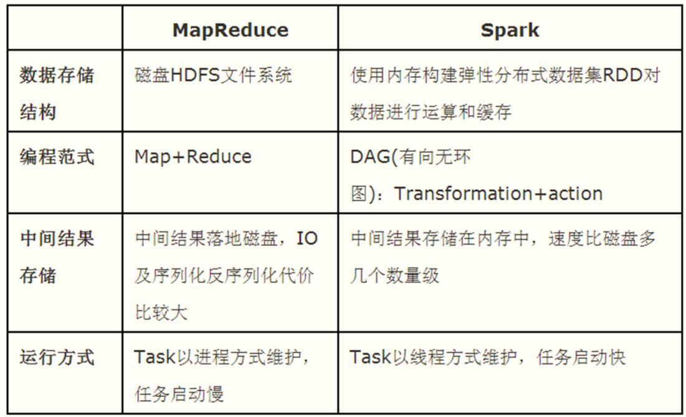
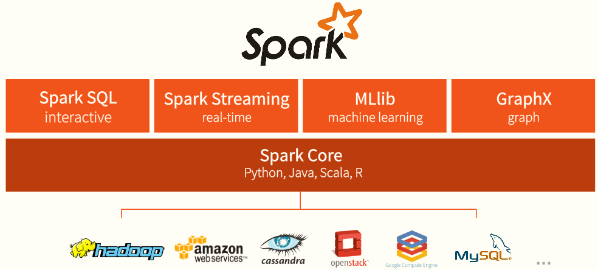
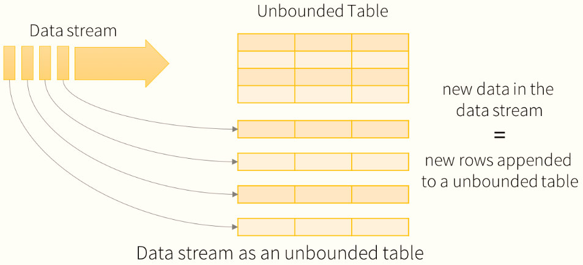
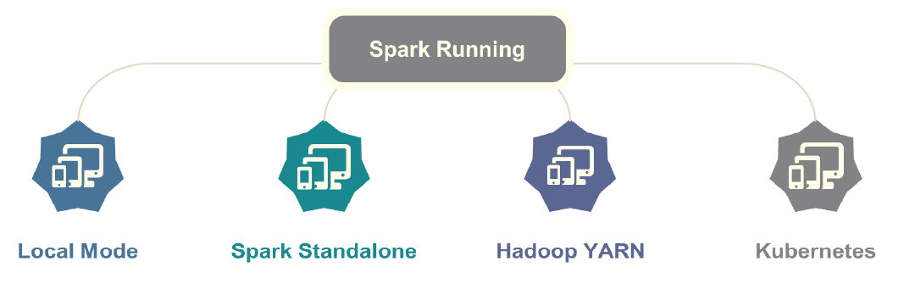
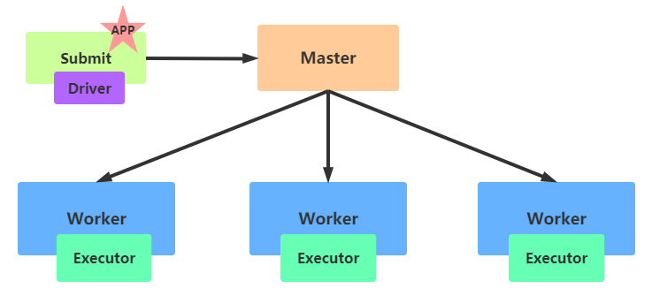
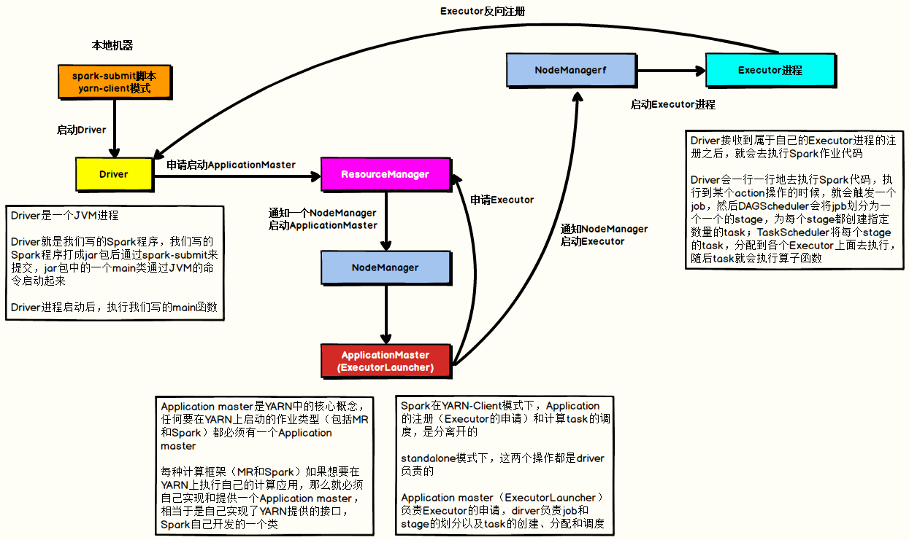
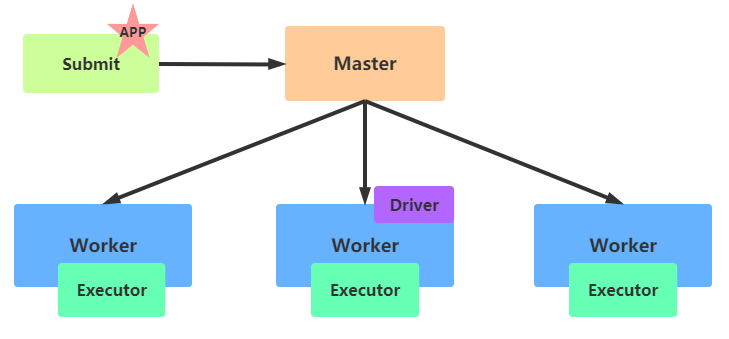
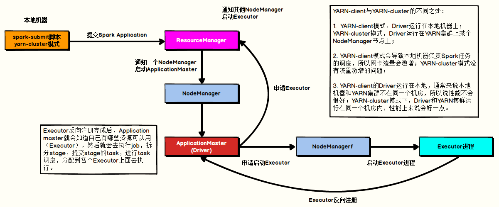

10. Spark¶
Apache Spark is a unified analytics engine for large-scale data processing.
起源于加州大学伯克利分校，来源于一篇论文弹性分布式数据集(
RDD)1、分析引擎：类似MapReduce框架，分析海量数据
2、统一分析引擎：针对任意数据分析需求，都可以分析数据
3、大规模数据分析引擎：处理数据可以海量数据
10.1. Introduction¶
RDD（弹性分布式数据集）是Spark框架的核心概念，属于分布式集合，将数据划分到不同的partition中，每个分区数据被一个Task任务处理（类似MapReduce框架中处理一个Block数据使用一个MapTask任务）

Spark与MapReduce框架的比较

Spark框架仅仅是一个分析数据的框架
数据来源：支持任何数据源，能够从任意存储引擎读写数据
应用程序运行：本地模式、集群模式(Standalone、Hadoop YARN、容器)
Spark应用程序运行模式：本地和集群、云端
Spark程序运行本地模式，可以指定JVM启动几个线程Thread或者分配多少Core CPU
10.2. 框架模块¶

Spark Core
实现了Spark的基本功能，包含RDD、任务调度、内存管理、错误恢复、与存储系统交互等模块。
数据结构
RDDSpark SQL
用来操作结构化数据的程序包，通过Spark SQL，可以使用SQL操作数据。
数据结构：DataSet/DataFrame = RDD + Schema
Spark Streaming
Spark提供的堆实时数据进行流式计算的组件，提供了用来操作数据流的API。
数据结构：DStream = Seq[EDD]
Spark MLlib
提供常见的机器学习(ML)功能的程序库。包括分类、回归、聚类、协同过滤等，还提供了模型评估、数据导入等额外的支持功能。
数据结构：RDD或者DataFrame
Spark GraphX
Spark中用于图计算的API，性能良好，拥有丰富的功能和运算符，能在海量数据上自如地运行复杂的图算法。
数据结构：RDD或者DataFrame
Structured Streaming
Structured Streaming结构化流处理模块，将流式结构化数据封装到DataFrame中进行分析。

Structured Streaming是建立在SparkSQL引擎之上的可伸缩和高容错的流式处理引擎，可以像操作静态数据的批量计算一样来执行流式计算。当流式数据不断的到达的过程中Spark SQL的引擎会连续不断的执行计算并更新最终结果。
10.3. 运行模式¶
Spark 框架编写的应用程序可以运行在本地模式（Local Mode）、集群模式（Cluster Mode）和云服务（Cloud），方便开发测试和生产部署。

本地模式：Local Mode
将Spark 应用程序中任务Task运行在一个本地JVM Process进程中，通常开发测试使用。
集群模式：Cluster Mode
将Spark应用程序运行在集群上，比如Hadoop YARN集群，Spark自身集群Standalone及Apache Mesos集群
Hadoop YARN集群模式（生产环境使用）：运行在 yarn 集群之上，由 yarn 负责资源管理，Spark 负责任务调度和计算，好处：计算资源按需伸缩，集群利用率高，共享底层存储，避免数据跨集群迁移。
Spark Standalone集群模式（开发测试及生成环境使用）：类似Hadoop YARN架构，典型的Mater/Slaves模式，使用Zookeeper搭建高可用，避免Master是有单点故障的。
Apache Mesos集群模式（国内使用较少）：运行在 Mesos 资源管理器框架之上，由 Mesos 负责资源管理，Spark 负责任务调度和计算。
云服务：Kubernetes模式
Spark 2.3开始支持将Spark开发应用运行在K8S上
10.4. Quick Start¶
Spark 2.4.x本地模式使用Spark-Shell运行Word Count程序
集群环境 CentOS 7.7
node1
数据预先上传至HDFS目录: /datas/wordount.data
scala> val inputRDD = sc.textFile("/datas/wordcount.data")
inputRDD: org.apache.spark.rdd.RDD[String] = /datas/wordcount.data MapPartitionsRDD[1] at textFile at <console>:24
scala> val wordsRDD = inputRDD.flatMap(line => line.split("\\s+"))
wordsRDD: org.apache.spark.rdd.RDD[String] = MapPartitionsRDD[2] at flatMap at <console>:25
scala> val tuplesRDD = wordsRDD.map(word => (word, 1))
tuplesRDD: org.apache.spark.rdd.RDD[(String, Int)] = MapPartitionsRDD[3] at map at <console>:25
scala> val wordcountsRDD = tuplesRDD.reduceByKey((tmp, item) => tmp + item)
wordcountsRDD: org.apache.spark.rdd.RDD[(String, Int)] = ShuffledRDD[4] at reduceByKey at <console>:25
scala> wordcountsRDD.foreach(item => println(item))
(spark,4)
(hadoop,1)
(hive,3)
(sprk,1)
10.5. Spark应用组成¶
当Spark Application程序运行在集群上时，由两部分组成：
Driver Program + Executors，都是JVM进程
1、
Driver Program：应用管理者
类似于
Application Master，管理整个应用中所有的Job的调度执行运行JVM Process，运行程序的Main函数，必须创建SparkContext上下文对象
一个SparkApplication仅有一个
2、
Executors：
相当于一个线程池，运行JVM Process，其中有很多线程，每个线程运行一个Task任务，一个Task运行需要1 Core CPU，所以可以认为Executor中线程数就等于CPU Core核数
一个Spark Application可以有多个，可以设置个数和资源信息
类似MapTask和ReduceTask
10.6. 使用Spark Shell¶
本地模式运行Spark框架提供交互式命令行：spark-shell，其中本地模式LocalMode含义为：启动一个JVM Process进程，执行任务Task，使用方式如下：
--master local | local[*] | local[K] 建议 K >= 2 正整数
其中K表示启动线程数目（使用CPU核心数）
Spark中Task以Thread方式运行
每个Task运行需要1 Core CPU
本地模式启动spark shell：
## 进入Spark安装目录
cd /export/server/spark
## 启动spark-shell
bin/spark-shell --master local[2]
10.7. Spark Standalone集群¶
10.7.1. 架构¶

Spark Standalone集群，类似于Hadoop YARN，管理集群资源和调度资源
主节点Master：类似ResourceManager
管理整个集群资源，接收提交应用，分配资源给每个应用，运行Task任务
从节点Workers：类似NodeManager
管理每个机器的资源，分配对应的资源来运行Task；
每个从节点分配资源信息给Worker管理，资源信息包含内存Memory和CPU Cores核数
历史服务器HistoryServer：类似MRJobHistoryServer
Spark Application运行完成以后，保存事件日志数据至HDFS，启动HistoryServer可以查应用运行相关信息
10.7.2. 搭建步骤¶
10.7.2.1. Step1：解压安装¶
## 解压软件包
tar -zxf /export/software/spark-2.4.5-bin-cdh5.16.2-2.11.tgz -C /export/server/
## 创建软连接，方便后期升级
ln -s /export/server/spark-2.4.5-bin-cdh5.16.2-2.11 /export/server/spark
## 进入配置目录
cd /export/server/spark/conf
## 修改配置文件名称
mv spark-env.sh.template spark-env.sh
vim spark-env.sh
## 添加内容如下：
JAVA_HOME=/export/server/jdk
SCALA_HOME=/export/server/scala
HADOOP_CONF_DIR=/export/server/hadoop/etc/hadoop
10.7.2.2. Step2：修改Slaves文件¶
## 进入配置目录
cd /export/server/spark/conf
## 修改配置文件名称
mv slaves.template slaves
vim slaves
## 内容如下：
node1
node2
node3
10.7.2.3. Step3：修改Spark-env.sh¶
配置Master、Workers、HistoryServer
SPARK_MASTER_HOST=node1 SPARK_MASTER_PORT=7077 SPARK_MASTER_WEBUI_PORT=8080 SPARK_WORKER_CORES=1 SPARK_WORKER_MEMORY=1g SPARK_WORKER_PORT=7078 SPARK_WORKER_WEBUI_PORT=8081 SPARK_HISTORY_OPTS="-Dspark.history.fs.logDirectory=hdfs://node1:8020/spark/eventLogs/ -Dspark.history.fs.cleaner.enabled=true"
10.7.2.4. Step4：创建日志存储目录¶
启动HDFS，创建应用日志存储目录
hadoop-daemon.sh start namenode
hadoop-daemons.sh start datanode
hdfs dfs -mkdir -p /spark/eventLogs/
10.7.2.5. Step5：修改Spark-default.conf¶
配置Spark应用保存EventLogs
## 进入配置目录 cd /export/server/spark/conf ## 修改配置文件名称 mv spark-defaults.conf.template spark-defaults.conf vim spark-defaults.conf ## 添加内容如下： spark.eventLog.enabled true spark.eventLog.dir hdfs://node1:8020/spark/eventLogs/ spark.eventLog.compress true
10.7.2.6. Step6：修改log4j.properties¶
设置日志级别
## 进入目录 cd /export/server/spark/conf ## 修改日志属性配置文件名称 mv log4j.properties.template log4j.properties ## 改变日志级别 vim log4j.properties
10.7.2.7. Step7：分发配置至其余机器¶
cd /export/server/
scp -r spark-2.4.5-bin-cdh5.16.2-2.11 root@node2:$PWD
scp -r spark-2.4.5-bin-cdh5.16.2-2.11 root@ node3:$PWD
## 远程连接到node2和node3机器，创建软连接
ln -s /export/server/spark-2.4.5-bin-cdh5.16.2-2.11 /export/server/spark
10.7.3. 启动服务¶
在主节点启动Master
/export/server/spark/sbin/start-master.sh
查看WEB-UI：http://node1:8080
在主节点启动从节点
/export/server/spark/sbin/start-slaves.sh
查看WEB-UI：http://node1:8080 可以看到从节点上线加入集群
10.8. 提交程序运行Spark Submit¶
可以在命令行使用
$SPARK_HOME/bin/spark-submit --help来获取相关命令的帮助
10.8.1. 示例¶
--master spark://node1:7077表示Standalone地址
SPARK_HOME=/export/server/spark
${SPARK_HOME}/bin/spark-submit \
--master spark://node1:7077 \
--class org.apache.spark.examples.SparkPi \
${SPARK_HOME}/examples/jars/spark-examples_2.11-2.4.5.jar \
10
10.8.2. 提交参数¶
10.8.2.1. 基本参数¶
# 表示运行的模式 本地模式local 集群模式
--master MASTER_URL
#本地模式local[2] Standalone集群 spark://domain1.port, spark://domain2:port
# Driver Program运行的地方 也表示集群的部署模式默认为client 生产环境通常使用cluster
--deploy-mode DEPLOY_MODE
# 表示要运行的Application的类名称
--class CLASS_NAME
# 应用运行的全名
--name A NAME OF YOUR APPLICATION
# 要运行的jar包名称 通常在本地文件系统中 多个jar包用逗号隔开
--jar JARS
# 参数配置
--conf PROP=VALUE
10.8.2.2. Driver Program参数¶
# 指定Driver Program JVM内存大小 默认为1G
--driver-memory MEM
# 表示Driver运行CLASS PATH路径
--driver-class-path
# Spark Standalone with cluster deploy mode 默认值为1
--driver-cores NUM
# 运行在YARN in cluster mode 默认值为1
--driver-cores NUM
#运行在Standalone的部署模式下，如果Driver运行异常而失败，可以自动重启
--supervise
10.8.3. Executor 参数配置¶
每个Spark Application运行时，需要启动Executor运行任务Task，需要指定Executor个数及每个Executor资源信息（内存Memory和CPU Core核数）
#Executor运行所需内存大小
--executor-memory MEM
#Execturo运行的CPU Cores,默认的情况下，在Standalone集群上为worker节点所有可有的Cpu Cores,在YARN集群下为1
--executor-cores NUM
#表示运行在Standalone集群下，所有Executor的CPU Cores,结合--executor-cores计算出Executor个数
--total-executor-cores NUM
#表示在YARN集群下，Executor的个数，默认值为2
--num-executors
#表示Executor运行的队列，默认为default队列
--queue QUEUE_NAME
10.8.4. 官方案例¶
# Run application locally on 8 cores
./bin/spark-submit \
--class org.apache.spark.examples.SparkPi \
--master local[8] \
/path/to/examples.jar \
100
# Run on a Spark standalone cluster in client deploy mode
./bin/spark-submit \
--class org.apache.spark.examples.SparkPi \
--master spark://207.184.161.138:7077 \
--executor-memory 20G \
--total-executor-cores 100 \
/path/to/examples.jar \
1000
# Run on a Spark standalone cluster in cluster deploy mode with supervise
./bin/spark-submit \
--class org.apache.spark.examples.SparkPi \
--master spark://207.184.161.138:7077 \
--deploy-mode cluster \
--supervise \
--executor-memory 20G \
--total-executor-cores 100 \
/path/to/examples.jar \
1000
# Run on a YARN cluster
export HADOOP_CONF_DIR=XXX
./bin/spark-submit \
--class org.apache.spark.examples.SparkPi \
--master yarn \
--deploy-mode cluster \ # can be client for client mode
--executor-memory 20G \
--num-executors 50 \
/path/to/examples.jar \
1000
# Run a Python application on a Spark standalone cluster
./bin/spark-submit \
--master spark://207.184.161.138:7077 \
examples/src/main/python/pi.py \
1000
# Run on a Mesos cluster in cluster deploy mode with supervise
./bin/spark-submit \
--class org.apache.spark.examples.SparkPi \
--master mesos://207.184.161.138:7077 \
--deploy-mode cluster \
--supervise \
--executor-memory 20G \
--total-executor-cores 100 \
http://path/to/examples.jar \
1000
# Run on a Kubernetes cluster in cluster deploy mode
./bin/spark-submit \
--class org.apache.spark.examples.SparkPi \
--master k8s://xx.yy.zz.ww:443 \
--deploy-mode cluster \
--executor-memory 20G \
--num-executors 50 \
http://path/to/examples.jar \
1000
10.8.4.1. WEB-UI监控¶
Spark 提供了多个监控界面，当运行Spark任务后可以直接在网页对各种信息进行监控查看。运行spark-shell交互式命令在Standalone集群上，命令如下：
/export/server/spark/bin/spark-shell --master spark://node1:7077
Spark Application程序运行时三个核心概念：Job、Stage、Task
Task：被分配到各个 Executor 的单位工作内容，它是 Spark 中的最小执行单位，一 般来说有多少个 Paritition（物理层面的概念，即分支可以理解为将数据划分成不同 部分并行处理），就会有多少个 Task，每个 Task 只会处理单一分支上的数据。
Job：由多个 Task 的并行计算部分，一般 Spark 中的 action 操作（如 save、collect，后面 进一步说明），会生成一个 Job。
Stage：Job 的组成单位，一个 Job 会切分成多个 Stage，Stage 彼此之间相互依赖顺序执行， 而每个 Stage 是多个 Task 的集合，类似 map 和 reduce stage。
10.9. Spark Standalone HA¶
10.9.1. 搭建配置¶
停止集群
## 在node1上执行命令 /export/server/spark/sbin/stop-master.sh /export/server/spark/sbin/stop-slaves.sh增加Zookeeper配置
对Spark配置文件【$SPARK_HOME/conf/spark-env.sh】文件如下修改
SPARK_DAEMON_JAVA_OPTS="-Dspark.deploy.recoveryMode=ZOOKEEPER -Dspark.deploy.zookeeper.url=node1:2181,node2:2181,node3:2181 -Dspark.deploy.zookeeper.dir=/spark-ha"
说明
spark.deploy.recoveryMode：恢复模式 spark.deploy.zookeeper.url：ZooKeeper的Server地址 spark.deploy.zookeeper.dir：保存集群元数据信息的文件、目录。包括Worker、Driver、Application信息。
注释或删除MASTER_HOST内容：
# SPARK_MASTER_HOST=node1
将spark-env.sh分发集群
cd /export/server/spark/conf scp -r spark-env.sh root@node2:$PWD scp -r spark-env.sh root@node3:$PWD
启动集群服务
先启动Zookeeper集群，再分别启动2个Master服务，最后启动Worker服务
## 启动ZOOKEEPER服务 zkServer.sh start ## 在node1和node2分别启动Master服务 /export/server/spark/sbin/start-master.sh ## 查看哪个Master为Active，就在哪个Master机器上启动Workers服务 /export/server/spark/sbin/start-slaves.sh
10.9.2. 测试运行¶
Standalone HA集群运行应用时，指定ClusterManager参数属性为
--master spark://host1:port1,host2:port2
提交圆周率PI运行集群，命令如下：
SPARK_HOME=/export/server/spark
${SPARK_HOME}/bin/spark-submit \
--master spark://node1.itcast.cn:7077,node2.itcast.cn:7077 \
--class org.apache.spark.examples.SparkPi \
${SPARK_HOME}/examples/jars/spark-examples_2.11-2.4.5.jar \
100
10.10. Spark On Yarn¶
无论是MapReduce、Flink、Spark应用程序，往往运行在Yarn上
统一资源管理，节约运维成本
充分使用集群
10.10.1. 搭建步骤¶
10.10.1.1. 修改spark-env.sh文件¶
10.10.1.1.1. 添加¶
vim /export/server/spark/conf/spark-env.sh
## 添加内容
HADOOP_CONF_DIR=/export/server/hadoop/etc/hadoop
YARN_CONF_DIR=/export/server/hadoop/etc/hadoop
10.10.1.1.2. 分发同步¶
cd /export/server/spark/conf
scp -r spark-env.sh root@node2:$PWD
scp -r spark-env.sh root@node3:$PWD
10.10.1.2. 修改Yarn-site.xml文件¶
10.10.1.2.1. 添加¶
## 在node1上修改
vim /export/server/hadoop/etc/hadoop/yarn-site.xml
## 添加内容
<property>
<name>yarn.log-aggregation-enable</name>
<value>true</value>
</property>
<property>
<name>yarn.log-aggregation.retain-seconds</name>
<value>604800</value>
</property>
<property>
<name>yarn.log.server.url</name>
<value>http://node1:19888/jobhistory/logs</value>
</property>
10.10.1.2.2. 分发同步¶
cd /export/server/hadoop/etc/hadoop
scp -r yarn-site.xml root@node2:$PWD
scp -r yarn-site.xml root@node3:$PWD
10.10.1.3. 修改spark-default.conf¶
10.10.1.3.1. 添加¶
## 在node1上修改
vim /export/server/spark/conf/spark-defaults.conf
## 添加内容
spark.yarn.historyServer.address node1:18080
10.10.1.3.2. 分发同步¶
cd /export/server/spark/conf
scp -r spark-defaults.conf root@node2:$PWD
scp -r spark-defaults.conf root@node3:$PWD
10.10.1.4. 配置依赖JARS¶
当Spark Application应用提交运行在YARN上时，默认情况下，每次提交应用都需要将依赖 Spark相关jar包上传到YARN 集群中，为了节省提交时间和存储空间，将Spark相关jar包上传到 HDFS目录中，设置属性告知Spark Application应用。
10.10.1.4.1. 添加¶
## 启动HDFS，在node1上操作
hadoop-daemon.sh start namenode
hadoop-daemons.sh start datanode
## hdfs上创建存储spark相关jar包目录
hdfs dfs -mkdir -p /spark/apps/jars/
## 上传$SPARK_HOME/jars所有jar包
hdfs dfs -put /export/server/spark/jars/* /spark/apps/jars/
spark-defatult.conf文件增加Spark相关JAR包存储的HDFS目录
## 在node1上操作 vim /export/server/spark/conf/spark-defaults.conf ## 添加内容 spark.yarn.jars hdfs://node1:8020/spark/apps/jars/*
10.10.1.4.2. 分发同步¶
## 在node1上操作
cd /export/server/spark/conf
scp -r spark-defaults.conf root@node2:$PWD
scp -r spark-defaults.conf root@node3:$PWD
10.10.1.5. Yarn资源检查¶
10.10.1.5.1. 设置资源不检查¶
## 编辑yarn-site.xml文件，在node1上操作
vim /export/server/hadoop/etc/hadoop/yarn-site.xml
## 添加内容
<property>
<name>yarn.nodemanager.pmem-check-enabled</name>
<value>false</value>
</property>
<property>
<name>yarn.nodemanager.vmem-check-enabled</name>
<value>false</value>
</property>
10.10.1.5.2. 分发同步¶
cd /export/server/hadoop/etc/hadoop
scp -r yarn-site.xml root@node2:$PWD
scp -r yarn-site.xml root@node3:$PWD
10.10.2. 启动服务¶
启动HDFS、YARN、MRHistoryServer和Spark HistoryServer
## 启动HDFS和YARN服务，在node1执行命令
hadoop-daemon.sh start namenode
hadoop-daemons.sh start datanode
yarn-daemon.sh start resourcemanager
yarn-daemons.sh start nodemanager
## 启动MRHistoryServer服务，在node1执行命令
mr-jobhistory-daemon.sh start historyserver
## 启动Spark HistoryServer服务，，在node1执行命令
/export/server/spark/sbin/start-history-server.sh
10.11. Deploy Mode¶
Client模式和Cluster模式两种模式
本质的区别是：Driver Program运行在哪里
Client模式Driver Program运行在客户端
Cluster模式Driver Program运行在一台Worker节点上
10.11.1. Client模式¶


具体流程
Driver在任务提交的本地机器上运行，Driver启动后会和ResourceManager通讯申请启动ApplicationMaster
随后ResourceManager分配Container，在合适的NodeManager上启动ApplicationMaster，此时的ApplicationMaster的功能相当于一个ExecutorLaucher，只负责向ResourceManager申请Executor内存
ResourceManager接到ApplicationMaster的资源申请后会分配Container，然后ApplicationMaster在资源分配指定的NodeManager上启动Executor进程
Executor进程启动后会向Driver反向注册，Executor全部注册完成后，Driver开始执行main函数
之后执行到Action算子时，触发一个Job，并根据宽依赖开始划分Stage，每个Stage生成对应的TaskSet，之后将Task分发到各个Executor上执行。
以运行词频统计WordCount程序为例，提交命令如下
/export/server/spark/bin/spark-submit \ --master yarn \ --deploy-mode client \ --driver-memory 512m \ --executor-memory 512m \ --executor-cores 1 \ --num-executors 2 \ --queue default \ --class me.iroohom.spark.submit.SparkSubmit \ hdfs://node1:8020/spark/apps/spark-chapter01_2.11-1.0.0.jar \ /datas/wordcount.data /datas/swcy-client
10.11.2. Cluster模式¶
生产环境使用的模式


具体流程
任务提交后会和ResourceManager通讯申请启动ApplicationMaster
随后ResourceManager分配Container，在合适的NodeManager上启动ApplicationMaster，此时的ApplicationMaster就是Driver
Driver启动后向ResourceManager申请Executor内存，ResourceManager接到ApplicationMaster的资源申请后会分配Container,然后在合适的NodeManager上启动Executor进程
Executor进程启动后会向Driver反向注册
Executor全部注册完成后Driver开始执行main函数，之后执行到Action算子时，触发一个job，并根据宽依赖开始划分stage，每个stage生成对应的taskSet，之后将task分发到各个Executor上执行
以运行词频统计WordCount程序为例，提交命令如下：
/export/server/spark/bin/spark-submit \ --master yarn \ --deploy-mode cluster \ --driver-memory 512m \ --executor-memory 512m \ --executor-cores 1 \ --num-executors 2 \ --queue default \ --class me.iroohom.spark.submit.SparkSubmit \ hdfs://node1:8020/spark/apps/spark-chapter01_2.11-1.0.0.jar \ /datas/wordcount.data /datas/swcy-cluster
对比：
cluster模式：生产环境使用
Driver程序运行在YARN集群中Worker节点上
应用程序的结果不在客户端显示
client模式：开发测试使用
Driver程序运行在Client的SparkSubmit进程中
应用程序的结果会在客户端显示